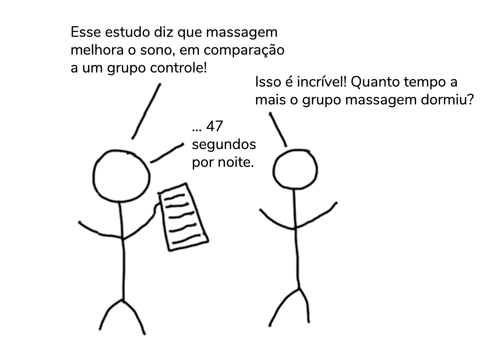

O tamanho de efeito não-padronizado
No post anterior, eu te expliquei que os tamanhos de efeito podem ser divididos em padronizados e não-padronizados. Os não-padronizados são aqueles que apresentam unidade de medida. Essa unidade de medida é a mesma dos dados coletados, da média, o que torna esse tipo de tamanho de efeito mais interpretável. É mais fácil pensarmos na relevância clínica/ prática de um achado ao avaliarmos o seu tamanho de efeito não-padronizado. Já o tamanho de efeito padronizado é adimensional, sem unidade de medida. Isso facilita comparações entre estudos, mas leva a uma perda de interpretabilidade.
Quando comparamos as médias de dois grupos independentes, o tamanho de efeito não-padronizado é simplesmente a diferença entre essas médias. Seguindo com o exemplo do post anterior (mas mudando os valores para fazermos cálculos diferente), imagine que recrutamos 10 pessoas sedentárias e 10 pessoas que praticam exercícios físicos regularmente. Então, quantificamos a glicemia de cada uma dessas pessoas e calculamos a média de cada grupo. A diferença entre essas médias é o tamanho de efeito não-padronizado desta análise, conforme representado abaixo:

Vou repetir a piadinha para que essa informação fique na sua cabeça. Perceba pela tirinha abaixo, que descreve um tamanho de efeito não-padronizado (com unidade de medida, segundos), como mesmo sem sermos especialistas na área conseguimos perceber que a diferença entre os grupos não é clinicamente relevante.
Traduzido de https://www.accountingexperiments.com/post/effect_size/